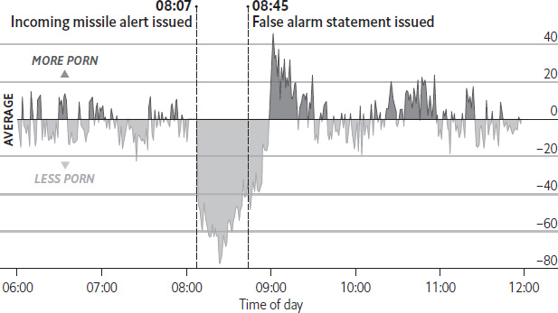
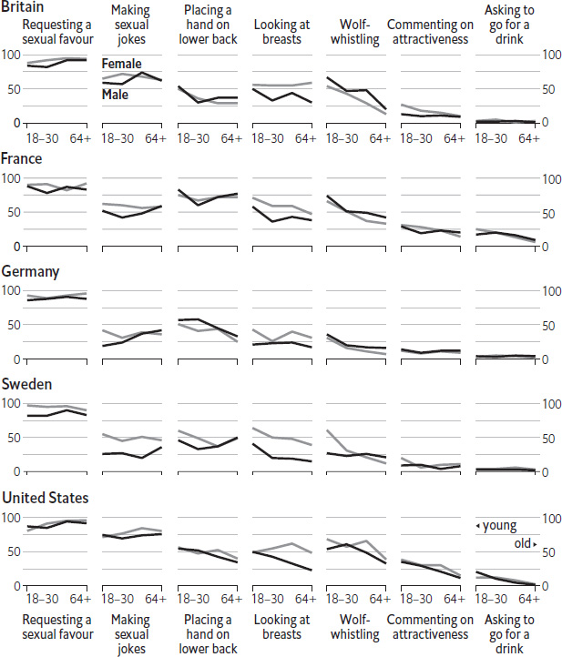
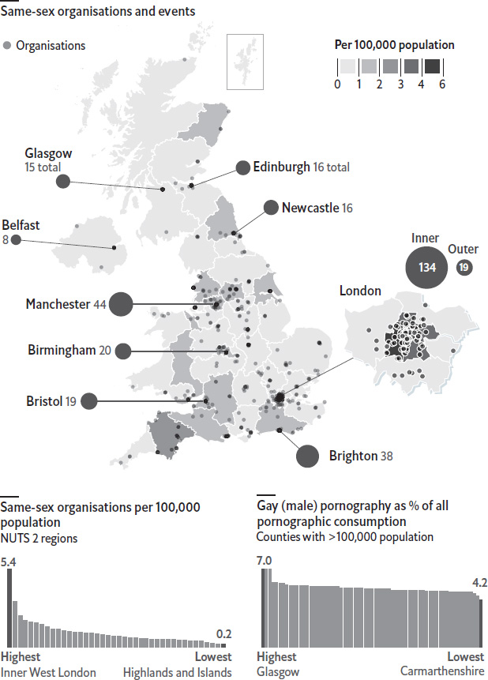
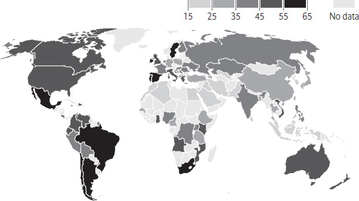
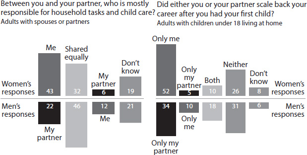
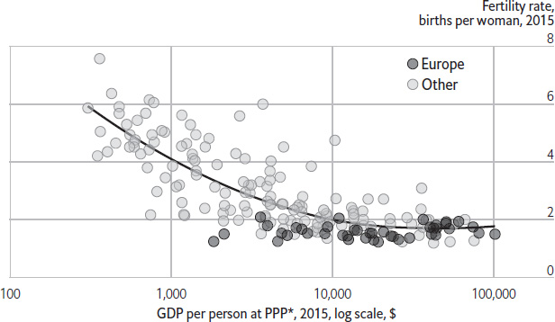

Once a practice associated with students looking to make a quick buck, sperm donation has penetrated the ranks of big business. The AIDS epidemic that began in the 1980s ended the informality surrounding the business, and as the costs and risks around testing and handling donated sperm increased, medics pulled out and entrepreneurs swiftly filled the gap. Today savvy sperm banks – particularly those that are able to export – can make a very decent income supplying a growing and changing market. How do businesses make money in the jizz biz?
Two things have provided entrepreneurs with fertile ground. First, a patchwork of regulatory intervention means that in certain countries the flow hasn’t kept up with demand. In several places, including Britain, anonymous donation has been outlawed. In other countries donors cannot be paid. Both reasons help explain why sperm banks in such places often struggle to recruit donors; the long waiting lists caused by low donor-counts can lead to customers shopping abroad. Second, as acceptance of modern family structures grows, so too does demand for a key missing ingredient. Where the vast majority of customers were previously heterosexual couples who were having trouble conceiving, today many if not most are either lesbian couples or single women. In some countries such women are forbidden from being treated with donated sperm, encouraging them to shop abroad. The smartest businesses have picked up on such gaps in the market and sell their stuff direct to sperm banks and clinics that struggle to recruit donors in their home markets. Possibly an even bigger money-spinner is selling directly to end-users. Thanks to the internet, dry-ice and DHL, customers can now shop for sperm from more or less anywhere and have it delivered to their homes.
Some American sperm banks boast that a donor can make up to $1,500 per month, which presumably requires near-abstention from personal pleasure. The normal rate for a single donation is around $100. One donation can usually be split into as many as five vials, which in turn sell for between $500 and $1,000 each. Most customers buy several. Despite the costs involved – notably for recruiting donors, testing and retesting, storage and marketing – the margins are engorged. Still, sperm banks have to work hard to compete for customers; some distinguish themselves by emphasising the safety and security of their “product”. Others focus on the “user experience” by modelling their websites on popular dating sites, where customers can filter candidate donors by particular features such as eye colour, education or hobbies. Some banks will charge extra for information ($25 for a childhood picture and so on) or sell premium subscriptions – giving extra information and early access to new donors – for hundreds of dollars more.
Even the most radical free-market liberals struggle with the question of whether sex cells (and other bodily tissue) should be as easy to trade as any other product. To protect the interests of donor-conceived children, there is a strong case for having basic regulation in place to ensure that all vials are tested for certain diseases before they can be sold. But morally driven policies about who can conceive using donated sperm are both discriminatory and, in the age of e-shopping, ineffective. More generally, overly restrictive policies, shortages and higher prices (they have roughly doubled over the past decade) seem to be driving customers to other sources of supply, including an international grey market that is distinctly dodgy. National regulators would do better to jump on the bandwagon rather than trying to stand in its way.
The threat of nuclear holocaust, familiar to Americans who grew up during the cold war, is alien to most today. On Saturday January 13th 2018 fears of annihilation re-emerged. At 8.07am Hawaiians awoke to a startling emergency alert on their phones, which warned them that a ballistic missile was inbound and that they should seek immediate shelter. It was not until 8.45am that the government revealed that the alert was sent in error, and that there was no threat. The episode, though horrifying for those involved, provides a unique window into the human psyche. Unsurprisingly, Google searches for phrases like “bomb shelter” surged during those confusing minutes. But less predictably, another website also saw its traffic fluctuate wildly that morning: Pornhub.
Data from the world’s most-viewed pornography site show that visits from Hawaii plummeted immediately after the missile alert hit, and did not regain their usual levels until around 15 minutes after the threat was revealed to be a false alarm. But as Hawaiians returned to their regular lives, many apparently took to the internet to alleviate their pent-up anxieties. Traffic, as compared with an average Saturday, peaked at 9.01am, when visits to the lewd website rose to 48% above their normal levels. Hawaiians’ exuberance did not last long. By 9.30am, Pornhub data show it was business as usual in America’s 50th state.
What a relief
Hawaii, Jan 13th 2018, traffic to Pornhub compared with an average Saturday, % difference

Source: Pornhub
The road to sex reassignment covers some very difficult terrain, ranging from hormone treatment and possibly surgery, to social stigma and discrimination. In many European countries, gaining legal recognition for reassignment is extremely difficult. Citizens of Malta, Ireland, Denmark and Norway can simply notify the authorities of their decision. Elsewhere the process requires judicial consent or even the diagnosis of a mental disorder. Switzerland, Greece and 18 other countries (mostly in eastern Europe), also have a final hurdle: sterilisation. Why is this the case?
The requirement for sterilisation has dark echoes of eugenics. In the early 1970s Sweden became the first country in the world to allow transgender people to reassign their sex legally. But it enforced a strict sterilisation policy, on the grounds that such people were deemed to be mentally ill and unfit to care for children. (The World Health Organisation still lists “transsexualism”, which it describes as “a desire to live and be accepted as a member of the opposite sex”, as a mental and behavioural disorder.) Sweden’s eugenics laws, which imposed sterilisation on women deemed mentally defective or otherwise handicapped to a degree “which makes them incapable of looking after their children”, lapsed only in 1976, after 42 years. But sterilisation remained a condition for sex reassignment until 2013. By this time, other countries had followed suit and adopted the same approach.
Amnesty International estimates that the European Union is home to around 1.5m transgender people (those whose gender identity differs from their biological sex). Though Europe is widely seen as progressive on LGBT rights, transgender rights specifically still lag. The processes involved in sex reassignment vary greatly between countries, most of which require a complex combination of medical interventions and legal paperwork. Compulsory sterilisation is perhaps the most controversial measure, provoking criticism from LGBT activists and the United Nations. States in which the idea of a man giving birth, or a woman fathering a child, are considered inconsistent with family values may cling to these clauses. But in April 2017, the European Court of Human Rights ruled in favour of three French complainants on the grounds that forced sterilisation violated their right to a private and family life – something guaranteed by the European Convention on Human Rights.
The court’s ruling binds France, and it suggests that the law in the 20 countries that still insist on sterilisation violates the convention on human rights. But it does not compel these countries to reform. Activists say it is likely to require several similar court cases before the continent reaches any kind of legal consensus. Understanding of transgender people is spreading, though, including the knowledge that many of them do not seek surgery. And in some countries, gender is becoming a less important characteristic for organising society: the Dutch parliament is considering whether official documents should record gender at all.
Harvey Weinstein was the tip of a very large iceberg. In the month after multiple allegations of sexual assault against the prominent film producer became public, a series of powerful men were accused of sexual assault and harassment of co-workers. In just a few weeks, the #MeToo hashtag on social media, used to mark posts about similar experiences suffered by ordinary people, was used some 5m times. This avalanche of accusations increased awareness of the prevalence of sexual harassment: 49% of male respondents to a poll by NBC News and the Wall Street Journal in October 2017 said that the news had made them think about their own actions around women. Yet there is no clear consensus on exactly which behaviours cross the line. Instead, people in different countries and age groups appear to use very different definitions.
During October and November 2017 YouGov, a pollster, surveyed people in five Western countries about whether a series of behaviours by men towards women constitute sexual harassment. The questions ranged from actions that are often innocuous, such as asking to go for a drink, to overt demands for sex. The range of views was vast. One consistent pattern that emerged was a generation gap. In general, younger respondents were more likely to think that a behaviour crossed the line than their older peers were. For example, over half of British women under 30 said that wolf-whistling was unacceptable. Less than a fifth of those over 64 felt that way.
Between men and women, differences of opinion emerged for specific questions. Both sexes tended to have similar views on whether a man who places his hand on a woman’s lower back or comments on her attractiveness has gone too far. However, female respondents were much less tolerant of men looking at women’s breasts than their male counterparts were: among Americans 64 and older, for example, half of women but just a quarter of men said they would consider such ogling sexual harassment. A third source of variation was nationality. Swedish men, for example, seem to feel entitled to make sexual jokes around women: only a quarter of them said such behaviour would be harassment. In contrast, three-quarters of American men thought it was unacceptable. Similarly, a quarter of French women under 30 believe that even asking to go for a drink is harassment, whereas almost none of their counterparts in Britain and Germany share that view.
“Would you consider it sexual harassment if a man, who was not a romantic partner, did the following to a woman?”
Surveyed Oct–Nov 2017, % stating “always” or “usually”, by age and sex

Sources: YouGov; The Economist
The magnitude of the reaction to the accusations against Mr Weinstein made clear that a reckoning with abuses by men in the workplace was long overdue. But given how little agreement exists about the definition of sexual harassment, employers seeking to ensure a comfortable work environment may need to be more explicit about the boundaries of acceptable behaviour than they may have previously realised was necessary.
Half a century after Britain’s Parliament passed the Sexual Offences Act of 1967, which partially decriminalised homosexual acts, gay life is flourishing more than ever. The country boasts the world’s gayest legislature, according to Andrew Reynolds, a professor of political science at the University of North Carolina at Chapel Hill: some 45 of the 650 members of Parliament elected in June 2017 were openly gay or bisexual. Britain is also tied with Sweden as the least homophobic country on the Gay Travel Index, an annual ranking produced by Spartacus World, a gay holiday guide.
Even though Britons see gay and lesbian politicians and fictional characters more and more often on television, there is still a surprising lack of data about where gay life is most concentrated. Polls typically find that about a quarter of people say they feel some attraction to the same sex, but just 2% of respondents to the Annual Population Survey identify themselves as something other than straight – a group too small to give an accurate regional picture. But analysis of two datasets can provide a clearer view.
The first attempts to measure where gay people live, and was provided by the insights team at Pornhub.com, a widely viewed pornography website. The video-streaming service attracts 5m visitors from Britain each day, 5.6% of whom watch gay content (excluding lesbian porn, whose main audience is straight men). When broken down by county, the data show very little geographic variance: 97% of the population lives in a region that is within one percentage point of the national average. Since some groups of people watch more porn than others, the numbers cannot reveal how many gay Britons there are. However, this does imply that gay people are very evenly distributed around the country.
The second dataset aimed to depict gay visibility. This involved scraping records of venues and events from a handful of listings websites, selecting only those that catered specifically to gay or bisexual people. These records are likely to be incomplete, since these lists are mostly user-generated, and gay bars are shutting down at a startling rate. The Economist’s data team found 675 organisations in total, ranging from club nights to cycling teams to church groups. There were many varieties, but their locations were heavily clustered. For example, inner west London had 25 times as many events per person as did Scotland’s highlands and islands. Other busy, liberal cities also tended to have high densities.
Britain, 2017

Sources: Eurostat; pinkuk.com; upnorthdownsouth.co.uk;
queersaunas.co.uk; pridesports.org.uk; wikishire.co.uk; lgbtconsortium.org.uk; Pornhub.com; The Economist
Put together, these datasets suggest that lots of gay people live in rural areas without much sign of their presence. But that now seems to be changing. Specialist dating apps have made it much easier to meet partners nearby. Thanks to a gradual decline in bigoted attitudes, older gay people are more willing to move to the countryside, where there is also a fair smattering of gay-run hotels and B&Bs. After London, the next most publicly gay region was found to be rustic Devon, home to five annual Pride events and a queer arts festival at Dartington Hall that took place in September 2017. Ceri Goddard, who helped organise the event, says it “reminded locals that amongst them there are thousands of gay and lesbian people”. As Britain becomes more comfortable with people displaying their sexuality openly, expect to see more such events in rural areas.
In the West, few civil-rights movements have prevailed so quickly and comprehensively as the campaign for gay rights. In America, support for same-sex marriage shot up from 27% in 1996 to 64% in 2017 – faster than the rise in acceptance of interracial marriage beginning in the late 1960s. Ireland has gone from having few openly gay public figures to legalising gay marriage and having a gay prime minister. But what about the rest of the world? How do Chinese or Peruvian people feel about gay rights? For that matter, what about the inhabitants of Angola? Figures compiled by the International Lesbian, Gay, Bisexual, Trans and Intersex Association (ILGA) provide some tantalising clues.
Take one straightforward measure – the proportion of people who strongly agree with the proposition that equal rights and protections should be applied to everyone, including people attracted to others of their sex. Not surprisingly, a majority of Americans, Spaniards and Swedes put themselves in that camp. A bit more surprisingly, Americans are somewhat less keen on gay and lesbian rights than are Argentinians, Brazilians, Chileans or Mexicans.
Most astonishing are the results from Africa. Although north African countries like Algeria, Egypt and Morocco are broadly opposed to gay rights, sub-Saharan Africa looks rather liberal. Attitudes in Angola, Ghana, Kenya and Mozambique are comparable to those in America – and much more liberal than attitudes in China or Japan. South Africa, as befits the fifth country in the world to legalise gay marriage, appears to be hotter on gay rights than America or Britain.
Can this possibly be true? ILGA’s figures come from RIWI, a firm that uses an unusual method of soliciting opinion called “random domain intercept”. When somebody types in an incorrect internet domain name, they might land on a site owned by RIWI, which (after checking the user is not a bot) asks them to complete a survey. So this is a poll of fat-fingered internet users, not of people in general. And attitudes to homosexuality in, say, rural Angola are highly likely to differ from attitudes among the connected classes in Luanda. Still, the results are suggestive. If a goodly number of internet-using, middle-class Africans are coming round to gay rights, that is something. The battle for gay rights in Africa and Asia is going to be a long, hard slog. A beachhead, however small, will help a lot.
“Equal rights and protections should be applied to everyone, including people who are romantically or sexually attracted to people of the same sex”, % strongly agreeing July to September 2017

Source: ILGA-RIWI Global Attitudes Survey on Sexual, Gender and Sex Minorities, 2017
Single people beware: if and when you move in with someone, you will probably end up doing more housework. Across the rich world, men and women in couples spend more time doing housework than single people. The extra burden is greatest for women in partnerships, who do on average five more hours of housework per week than single women. Men in couples do just half an hour more. For most, household chores are boring and tedious. So why do those in couples spend more time on them – and why is the difference bigger for women?
The answer is not simply that couples are more likely to have children, who create mess. Cristina Borra of the University of Seville, Martin Browning of the University of Oxford and Almudena Sevilla of Queen Mary University of London looked at detailed data on how people spend their time in America, Britain and Australia. When they excluded time spent caring for children and looked at couples without children, the differences remained. Perhaps, they suggest, the difference is down to the type of person who becomes part of a couple. The tidy(ing) sort might be more likely to partner up than the messy. And perhaps women in couples spend less time bread-winning, leaving more time for bread-baking.
The researchers looked at people over time, as they moved into couples, and at the differences between routine housework chores, like cooking, cleaning and tidying; and non-routine housework, like making repairs around the house. Looking at routine housework, they found that almost half the difference for women is driven by the fact that the sort to join a couple does more housework in the first place. But it is different for men. The kind of man who spurns routine housework is more likely to couple up. The extra housework such men do comes in the form of DIY or managing the family finances. The economists debunk the idea that women spend fewer hours on paid work – even when they account for differences, the chore inequality persists. It’s not that women have more time; they just do more housework.
If people in couples choose to do more housework than singletons, that is their business. Perhaps it is harder to be messy when there is someone watching over your shoulder. Well-cooked meals may be more enjoyable consumed as a pair. The gender inequality this research suggests is more concerning, however, not only in itself, but also because it could be holding back women in the workplace. Routine tasks are harder to fit around a hectic work schedule, whereas building a shelf can be done at the weekend. Men might dismiss the difference as a matter of taste, assuming, perhaps, that women prefer doing the housework, or value its fruits more highly. Women might even be responding to their partners’ possible deficiencies, at cooking, say. But women, rather than enjoying housework, may instead be conforming to society’s expectations. An earlier study, published in 2012, found that whereas the amount of housework men did seemed to vary depending on how much they hated it, women experienced no such luxury.
Across the Western world, women greatly outnumber men in lower-level jobs, such as clerical and administrative positions, whereas managerial and senior jobs are mostly held by men. This gender gap at work is largely due to the “motherhood penalty” that women’s careers suffer after they have children. But another more subtle factor could be part of the problem.
The Economist and YouGov, a pollster, asked people in eight countries how they balance career and family. Men were on average only half as likely as women to think that, in their family, the majority of household and child-care duties fell on the woman’s shoulders. And they were more likely than women to say that such tasks were split equally. Respondents were also asked which partner had scaled back at work when their first child arrived, by reducing working hours or by switching to a part-time or a less demanding job (for example, a role that required less travel or overtime). Another perception gap emerged. In each country, both men and women were less likely to say that their partner had made adjustments than members of the opposite sex were to say they had made adjustments themselves.
The perception gap
Average of surveyed countries, Feb 2017, %

Sources: YouGov; The Economist
Perceptions in France differed most: 55% of women said that they, and only they, had slowed down at work, twice as high as the share of men who said that only their partners had done so. The difference was smallest in Denmark, the country that had the largest shares of both men and of women saying that neither partner had made adjustments. (Denmark has one of the world’s most generous child-care systems.) Though it is unclear whether men or women are more accurately depicting the situation, many people are obviously ignorant about the reality of their partners’ lives. And even if men are open to doing more at home so their wives can do more at work, the necessity may not occur to them. Gender equality could be boosted by some frank kitchen-table conversations.
The typical family in America is changing. Couples are increasingly reluctant to seal their relationships with the stamp of marriage, or to tie the knot before having children. In 1960 fewer than a tenth of births were to unmarried women, whereas these days around two-fifths of children are born out of wedlock. Economists wonder whether the changing economic fortunes of men might be driving these decisions, but struggle to disentangle the different factors at work. Recently, though, new evidence has emerged on the topic. Did, for example, the fracking boom affect family formation?
It seems plausible that someone might be reluctant to marry a person with poor or worsening economic prospects. And babies are expensive; to an economist, the idea that people might be more likely to have one when they get richer is a natural one. There is some historical evidence to support both hypotheses. In response to the Appalachian coal boom of the 1970s and 1980s, marriage rates went up, as did the share of babies born to married couples. More recently, a study by three economists, David Autor, David Dorn and Gordon Hanson, found that workers exposed to import competition from China during the 1990s and 2000s took a hit to their “marriage-market value”. The negative shock seemed to turn people off marriage and children.
Another study, by Melissa Kearney and Riley Wilson, two economists at the University of Maryland, looks at the impact of the recent fracking boom in America, which boosted job opportunities for less-educated men. The economists wanted to see how this affected birth rates, both in and outside of marriage. They compared marriage and birth rates in areas where fracking had boosted the local economy with those where it had not had any effect. The researchers found no effect on marriage rates. But fertility rates did rise. On average, they found that $1,000 of extra fracking production per person was associated with an extra six births per 1,000 women.
The result confirms the hypothesis that better economic prospects lead to higher fertility. But it also sheds light on changing social attitudes in America: good times used to mean more wedding bells and babies, whereas now they just mean the latter. The policy prescriptions are not obvious. Whether or not people get married is their own business. But the finding does offer some comfort to those who worry that declining marriage rates are purely the product of worsening economic prospects for men. Clearly, some other factor is at play.
Julian Assange, the founder of WikiLeaks and apparently an amateur demographer, is worried about Europe’s declining birth rate. In a tweet posted in 2017 he posited that “Capitalism + atheism + feminism = sterility = migration”, and noted that the leaders of Britain, France, Germany and Italy were all childless. Never mind that Mr Assange needs a dictionary. “Sterility” means the inability to play a part in conception (often for medical reasons, or because a man has had a vasectomy or a woman has had her Fallopian tubes tied). What he presumably meant was childlessness, or perhaps a preference for fewer children – a preference, moreover, that until the advent of modern contraception women might hold but could not act on.
Mr Assange’s tweet echoed sentiments expressed by RT (formerly Russia Today), a Kremlin-backed news organisation. Russian propagandists have long argued that the West’s declining fertility rate is evidence of its decline. An RT editorial claimed that “Europe has been committing protracted demographic suicide for several decades”. (Russia’s own fertility rate stands at 1.8 births per woman, not much above the western European average of 1.6.) Critics responded sharply to Mr Assange’s tweet, countering that a country’s birth rate depends largely on how rich it is. But is there any germ of truth in what he said?
Birth rates are indeed highly correlated with national income: wealth is a powerful contraceptive, and this more than anything else explains Europe’s low birth rates. But the fertility rates of many European countries are lower than would be expected if GDP per person were the only factor that mattered. Romania, for instance, has 1.5 births per adult woman. Based purely on its level of economic development, that figure would be expected to be around 2.1. What about the factors Mr Assange mentioned? Prosperity, capitalism, secularism and feminism all tend to be found in the same places. To try to distinguish the impact of each, The Economist tested their relationships with fertility rates across different countries. To measure religious observance, our data team used survey data from the Pew Research Centre, a think-tank. Levels of capitalism or feminism are harder to quantify, but an economic-liberty index produced by the Heritage Foundation, another think-tank, and a gender-equality index from the UN Development Programme (UNDP) may serve as proxies.
The relationship between fertility and wealth

Sources: World Bank; The Economist
*Purchasing-power parity
Once GDP per person was taken into account, levels of capitalism, thus measured, did nothing extra to explain variations in birth rates. Both gender equality and the share of population that is irreligious did seem to play a part. But while those two traits may help explain why eastern European countries have far lower birth rates than Middle Eastern and Latin American ones with similar levels of income, neither was a meaningful predictor of fertility rates within Europe. Birth rates in egalitarian and irreligious Scandinavia are comparable to those in Catholic Italy, where women are expected to care for both babies and older relatives. In short, variations in enthusiasm for capitalism and feminism do not explain variations in European birth rates, despite Mr Assange’s suggestion. Countries in eastern Europe and East Asia, moreover, tend to have both low birth rates and negligible numbers of immigrants. So the last step in Mr Assange’s equation, linking low birth rates to higher rates of migration, makes no sense at all.
Child marriage is common in the developing world, where a third of girls, on average, marry before the age of 18. At that rate, another 1.2bn women will have got married as children by 2050. Almost all of the countries in the top 20 spots in a ranking of states with the highest rates of child marriage are African. Far less well-known is the prevalence of the practice in America – and almost always among girls. The country’s diplomats are active in international efforts to ban child marriage abroad, but American children are still permitted to marry (albeit, usually, with parental consent and the approval of a judge or a clerk).
Child marriage is most common in America’s conservative religious communities and poor, rural areas. But it can be found in all socio-economic strata and in secular, as well as pious, families. More than 207,000 American minors were married between 2000 and 2015, according to an investigation by Frontline, a television programme. Over two-thirds were 17 years old, but 985 were 14, and ten were just 12. Twenty-seven states have no minimum age for marriage. Encouragingly, the practice has become less common in recent years. This reflects changing social norms, higher rates of school attendance for girls and a decline in marriage generally. Whereas 23,500 minors got married in 2000, that figure had dropped to a little over 9,000 by 2010. Yet even as recently as 2014 more than 57,000 minors aged 15 to 17 were married. They entered perhaps the most important legal contract of their lives while, in most cases, not being considered legal adults. This means they cannot file for divorce, sign rental leases or seek protection in a shelter if they are abused.
Opponents of a ban on child marriage can be found across the political spectrum. Social conservatives argue that early marriages can reduce out-of-wedlock births as well as the number of single mothers on welfare. They also want to see religious traditions and customs protected. Libertarians say that marriage should be a choice made apart from the state. On the left, the American Civil Liberties Union and Planned Parenthood, a national group that offers reproductive-health services, have defended the practice because banning it would intrude on the right to marry. Supporters of a ban hold that if children are seriously committed to each other, they can wait until they are 18 to marry. They also argue that religious customs that hurt children should not be protected.
Parents may think they have their child’s best interest in mind by allowing an early marriage, especially if their daughter is pregnant. But in the vast majority of cases they actually harm her, sometimes irreparably. Between 70 and 80% of child marriages end in divorce. Married children are twice as likely to live in poverty and three times more likely to be beaten by spouses than married adults are. Around 50% more of them drop out of high school, and they are four times less likely to finish college. They are at considerably higher risk of diabetes, cancer, stroke and other physical illnesses. And they are much more likely to suffer from mental-health problems. That is why activists are so intransigent in pushing for a complete ban. And they are gaining ground. Virginia, Texas and New York have introduced laws that restrict marriage to legal adults. (In some states, people under 18 can become legal adults, with the associated rights, in order to marry.) Connecticut has banned marriage for under-16s. In 11 other states legislation restricting child marriage is in the pipeline; Arizona, Florida, Maryland, Massachusetts, New Jersey and Pennsylvania are considering blanket bans on marriage for those under 18. But no American state has passed a law that categorically forbids the practice.